Chapter 10 Miscellaneous Other Sources
10.1 Construction Operations
10.1.1 Emissions
Introduction
These categories account for fugitive dust emissions generated from construction activities while building residential, commercial, industrial, institutional structures, and roads (Categories # 744 - 748, respectively). The PM emissions result from construction operations such as digging, loading, scraping, grading, compacting, light duty vehicle traffic, etc.
Emission factors were based on a study done by Midwest Research Institute. This study produced an average emission factor of 0.11 ton PM10/acre-month for these construction operations. (This value is assumed to include the effects of typical control measures, such as watering. Watering is assumed to control dust by 50%.) However, in the Bay Area, it was assumed 20% of construction activity consisted of large-scale operations that involved substantial earthmoving operations. Under this “worst-case” scenario, the emission factor was 0.42 ton PM10/acre-month. Therefore, the overall composite emission factor used for these construction activities in the Bay Area was 0.172 ton PM10/acre-month. It is assumed that all the above-mentioned construction operations have the same emission factor.
The California Air Resources Board provided the PM speciation profile (PM10 fraction of 0.4893). Activity data (throughputs) are expressed in terms of acre-months for the above categories.
Methodologies
Residential Construction (Category 744)
The number of new housing units (single and multi-family), provided by the California Department of Finance, is used to calculate the acreage disturbed. The affected construction area for a single family living unit is estimated at 1/7th of an acre for Alameda, Contra Costa, Marin, San Francisco, San Mateo, and Santa Clara counties; and 1/5th of an acre for Napa, Solano, and Sonoma counties. The affected construction area for multi-family living units is estimated to be 1/20th of an acre. The construction time for residential units is assumed to be 6 months. . The throughput, expressed in acre- months, is estimated by multiplying the appropriate area factors, construction time and number of new units for each county.
Commercial, Industrial, and Institutional Construction (Categories 745 -747)
The estimated construction acreage for these categories is based on project valuations supplied from the California Department of Finance. The valuations for commercial, industrial, and institutional construction are 3.7, 4.0, and 4.4 acres per million dollars of valuation, respectively. Since these factors are 1977 values, multiplying the above valuations by the ratio of 1977 to a particular year’s Association of Bay Area Government’s (ABAG’s) Consumer Price Index value makes inflationary corrections for that particular year. The construction time for commercial, industrial, institutional buildings is assumed to be 11 months. The throughput for a particular year, expressed in acre-months, is found by multiplying that year’s inflationary adjusted project valuation by the county’s construction valuation, and construction time.
Road Construction (Category 748)
The latest road construction for freeways, highways, county and city roads was estimated by the difference in their respective total mileage between that year’s and prior year’s data, as reported in the California Statistical Abstract. The affected area per mile of road for freeways, highways, and county and city roads are 12.1, 9.2, and 7.8 acres/mile, respectively. The construction time for roads is assumed to be 18 months for the average project. The throughput, expressed in acre-months, is estimated by multiplying the road construction miles, affected area per mile of road factor, and project duration time.
The emission factor (which includes any controls) used for all categories mentioned above was estimated at 0.3515 ton PM/acre-month (703.0 lbs. PM/acre-month), with the PM10 fraction at 0.4893. The total emissions for these categories are determined by multiplying the throughput and emission factor.
Monthly Variation
The monthly variations of emissions for the Bay Area counties in Category 744 – 748 were based on the ARB’s seasonal profiles for Building and Road Construction Dust. Roughly, emissions were distributed as 55% during the months of April to September and 45% during the remaining months.
County Distribution
Distribution of emissions into counties was based on construction activity provided by the California Department of Finance.
10.1.2 Trends
History
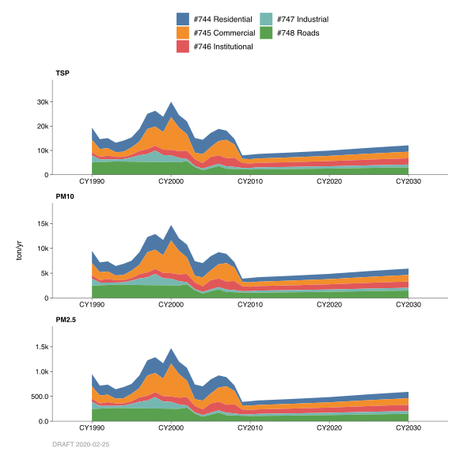
The historical growth profile was based on a combination prior emissions data (back to 1987) and the ABAG’s 2009 Construction Employment Growth Profile.
Growth
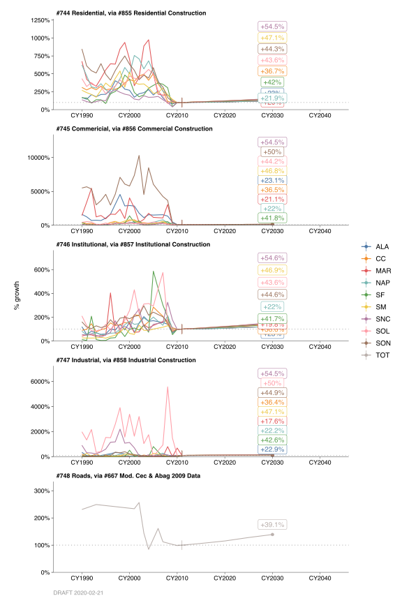
The projected emissions to 2030 for Categories 744 – 747 were based on ABAG’s 2009 Construction Employment Growth Profile.
For Category 748, the growth profile for the years 2008-2010 was based on information found in the California Energy Commission’s Report “Transportation Energy Forecasts and Analyses for the 2009 Integrated Energy Policy Report”, May 2010, Table 2.10. For these years, the activity decreased an average 4.3% per year to account for the downturn in the economy. After 2010, projected emissions to 2030 were based on ABAG’s 2009 Construction Employment Growth Profile.
By: Stuart Schultz Date: January 2014 Base Year 2011
10.2 Farming Operations
10.2.1 Emissions
Introduction
Farming Operations consist of two categories, Agricultural Land Preparation (Category 749) and Agricultural Harvest Operations (Category 1435). The methodology for emission calculation and temporal activity for both these categories were taken from the California Air Resources Board’s (ARB’s) Emission Inventory Procedural Manual Section 7.4 (Agricultural Land Preparation, revised January 2003) and Section 7.5 (Agricultural Harvest Operation, revised January 2003).
Category 749 accounts for particulate emissions generated by farming operations such as tilling, plowing, discing, leveling, etc. These activities are normally performed in the early spring and/or fall months. Therefore, particulate emissions from agricultural tilling are highly dependent on type of crop, climate, soil properties and equipment characteristics.
Category 1435 accounts for particulate emissions caused from harvest activities. These activities include harvest vehicles traveling over the soil, mechanical processing of crop and underlying soil, or removal of crop waste material through blowing or sweeping action. As of this writing, the only crops in California that had harvest particulate emissions factors were almonds, cotton, and wheat. All other relevant crops are assigned emission factors by scaling from these three measured values.
Emissions from fuel combustion of agricultural equipment, such as mowers, tractors, tillers, etc., are accounted for in Category 1655 (Agricultural Equipment, Gasoline-4 Stroke), Category 1656 (Agricultural Equipment, Evaporative-4 Stroke), and Category 1646 (Agricultural Equipment, Diesel).
Methodology
Category 749
Agricultural land preparation particulate emissions for each crop are estimated using the following equation:
\[ \text{Emissions}_{crop} = \text{Emission Factor}_{crop} * \text{Acres}_{crop} \]
The crop specific PM10 emission factors are calculated by multiplying a land preparation emission factor (i.e. root cutting, discing, rippling, weeding, land planning, etc.) with the number of passes performed per acre that are needed to prepare a field for planting a particular crop (acre-pass). A crop may have multiple land preparation operations with its corresponding number of acre-passes. In this case, the crop specific emission factor is the sum of acre-pass weighted emission factor for each land preparation operation. For example, the crop PM10 emission factor for garlic is as follows:
FIXME: RECREATE TABLE
There are 21 crop specific PM10 emission factors (see Table 2.a of ARB’s Agricultural Land Preparation document) that include such crops as alfalfa, almonds, garlic, grapes (raisin, table and wine), tomatoes, wheat, etc. All other crops are assigned an emission factor from one of the 21 crop specific PM10 emission factors (see Table 3 of ARB’s Agricultural Land Preparation document).
Example 1: Calculate the 2010 PM10 and total particulate emissions from land preparation activities for garlic in Santa Clara County, where
- the crop specific PM10 emission factor = 6.5 lbs PM10/acre/yr,
- 366 acres were devoted to garlic in 2010, and
- the PM10 factor is .4543.
\[ \begin{eqnarray} \text{PM}_{10}\ \text{emissions} &=& \frac{6.5\ lb}{acre \cdot yr}\times 366\ acre \\ &=& 2379\ lb/yr \\ &=& 1.19\ ton/yr\ \text{PM}_{10} \end{eqnarray} \]
\[ \begin{eqnarray} \text{PM emissions} &=& 1.19\ ton/yr\ \text{PM}_{10} \div 0.4543 \\ &=& 2.62\ ton/yr\ \text{PM} \end{eqnarray} \] Each of the county’s crops are estimated in this fashion and then summed for the total PM10 emissions. The nine counties within the Bay Area were summed to get the District total. (The District’s portion of Solano and Sonoma Counties were 38% and 32%, respectively.) PM emissions are calculated by dividing PM10 value by 0.4543.
Category 1435
Agricultural Harvest Operations particulate emissions for each crop are estimated using the following equation:
\[ \text{Emissions}_{crop} = \text{Emission Factor}_{crop} * \text{Acres Harvested}_{crop} \]
The individual crop emissions for each county were summed to produce county and District wide total particulate and PM10 agricultural harvest emissions. The PM10 emission factors were taken from Table 2 of ARB’s Agricultural Harvest Operations document. Using the PM10 emissions factors for cotton, almonds, and wheat as a baseline, other crop’s PM10 emission factors were estimated. The number of acres to each applicable crop was obtained from either the county’s annual agricultural crop reports or the California Agricultural Statistics Service (CASS).
Example 2: Calculate the 2010 PM10 and total particulate emissions from agricultural harvest operations for walnuts in Contra Costa County, where
- the Crop specific PM10 emission factor = 40.77 lbs PM10/acre,
- 399 acres were devoted to walnuts in 2010, and
- the PM10 factor is .4543.
\[ \begin{eqnarray} \text{PM}_{10}\ \text{emissions} &=& \frac{40.77\ lb}{acre \cdot yr}\times 399\ acre \\ &=& 16267\ lb/yr \\ &=& 8.13\ ton/yr\ \text{PM}_{10} \end{eqnarray} \]
\[ \begin{eqnarray} \text{PM emissions} &=& 8.13\ ton/yr\ \text{PM}_{10} \div 0.4543 \\ &=& 17.90\ ton/yr\ \text{PM} \end{eqnarray} \]
Each of the county’s crops are estimated in this fashion and then summed for the total PM10 emissions. The nine counties within the Bay Area were summed to get the District total. (The District’s portion of Solano and Sonoma Counties were 38% and 32%, respectively.) PM emissions are calculated by dividing PM10 value by 0.4543.
Monthly Variation
The monthly variations of emissions for the Bay Area counties in Category 749 were based on the ARB’s seasonal profile for agricultural land preparation emissions (Table 6, Agricultural Land Preparation, Section 7.4). For Category 1435, the monthly variations of emissions were based on ARB’s seasonal profile for agricultural harvest emissions (Table 4, Agricultural Harvest Operations, Section 7.5).
County Distribution
For both categories, the county distribution was based on the crop activity reported by the counties’ annual agricultural crop reports or the CASS.
10.2.2 Trends
History
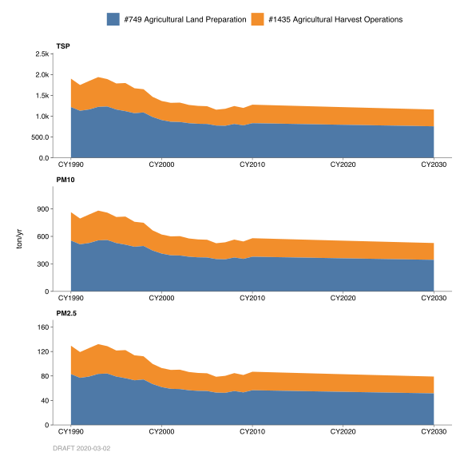
For Category 749, the historical growth profile was based on a combination of prior emissions data (back to 1987) and an annual activity increase factor of 1.00862 from 1986 back to 1967. This backcasting value represented the Bay Area’s annual activity increase (in acres) from 2010 going back to 1987.)
For Category 1435, the historical growth profile was based on a combination of prior emissions data (back to 1987) and an annual activity increase factor of 1.00905 from 1986 back to 1967. This backcasting value represented the Bay Area’s annual activity increase (in acres) from 2010 going back to 1987.)
Growth
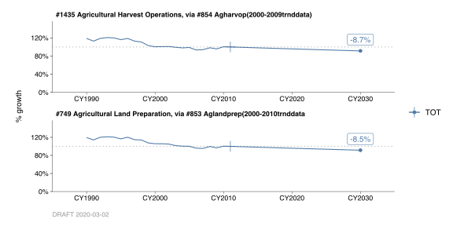
Projected emissions to 2030 for both categories were based on ARB’s growth profile for Agricultural Operations. For the Bay Area, this amounts to a 0.1% decrease in activity per year.
For Categories 749 and 1435, the projected growth profile was based on emissions data from 2000 – 2010. The annual activity factors during this time period decreased by 0.004692 and 0.004777 per year, respectively.
By: Stuart Schultz Date: January 2014 Base Year 2011
10.3 Accidental Structural Fires
10.3.1 Emissions
Introduction
Category 750 estimates criteria pollutant (particulate, organic, NOx, SOx, and CO) and greenhouse gas emissions (CO2, CH4, and N2O) from accidental structural fires. The Structural Fires category is an area source category that includes residential and commercial buildings as well as mobile and trailer home fires.
Methodology
The methods used to calculate emissions for this category conforms to the methods used by the California Air Resources Board (CARB). The total number of structural accidental fires in California was acquired from the State Fire Marshal’s Office. Structural fires were apportioned to the Bay Area based on number of households in the Bay Area as compared to total California households.
Structural losses. For building and mobile home fires, an average percent structural loss per fire was calculated by dividing the total monetary damage due to fires by the product of the average value of a residence in California and the number of residential fires. The result is an average loss of 7.3% per fire. According to census data and the National Association of Home Builders, the average residence has approximately 1,649 square feet of floor space and an average of 11,000 board feet of lumber in its structure. Assuming an average of one ton of material per 1000 board feet, an average residence would have approximately 11 tons of combustible material. With a rate of loss of 7.3%, the structural loss would be 0.80 tons per fire.
Content losses. The National Bureau of Standards lists the combustible contents per square foot of the functional areas of the average home. These figures were multiplied by the percent of fires originally estimated to occur within each of these areas, and the products were then added to give a weighted average of 7.91 lb/sq. ft. as shown in Table 1.
| Area |
Origin of Fires |
Combustible Material* |
Weighted Average* |
|---|---|---|---|
| Bedroom | 29.0% | 10.4 | 3.01184 |
| Sleeping Area | 0.2% | 10.4 | 0.02080 |
| Dining Area | 2.2% | 7.2 | 0.15840 |
| Kitchen | 53.9% | 6.8 | 3.66656 |
| Bathroom | 6.3% | 7.0 | 0.44240 |
| Laundry | 8.1% | 7.2 | 0.58176 |
| Office | 0.2% | 7.9 | 0.01343 |
| Other | 0.1% | 9.6 | 0.01248 |
| NA | NA | NA | 7.90767 |
| * lb / sq. ft |
Total losses. With a 7.3% loss rate and a factor of 7.91 pounds of combustible contents per square foot, and assuming an average floor space of 1300 square feet, the content loss for the average residential fire would be: \(1649 \times 0.073 \times 7.91 \div 2000\) = 0.48 (ton/fire).
\[ \begin{eqnarray} \text{Loss}_{structural} + \text{Loss}_{content} &=& \\ 0.80 + 0.48 &=& 1.28\ ton/fire \end{eqnarray} \]
Structural fire emission factors in pounds per ton of material burned for TOG, CO and PM were obtained from the results of tests on the burning of model wood buildings. The emission factor for NOx was assumed to be similar to that listed in AP-42 for municipal refuse. These emission factors were converted to units of pounds per fire using the factor 1.28 ton/fire. The criteria pollutant composite emission factors (pound/fire) are as follow:
FIXME: THESE EMISSION FACTORS DON’T MATCH THE BY2011 METHODOLOGY PDF
| category | PM | TOG | NOx | CO | CO2bio | CH4 | N2O |
|---|---|---|---|---|---|---|---|
| #750 Accidental Structural Fires | 21.1 | 27.1 | 7.8 | 327.6 | 3760 | 5.67 | 0.1033 |
|
|
|||||||
| Emission factors (pounds per unit throughput). |
The emission factors for greenhouse gas inventory were developed using above information and emission coefficient data from the Environmental Protection Agency (EPA), the U.S. Department of Energy’s (DOE’s) Energy Information Administration (EIA) and The California Energy Commission (CEC). The Greenhouse gas composite emission factors (pounds/fire) are as follow:
Carbon Dioxide emissions from this category are considered to be biogenic emissions. Biogenic Carbon Dioxide (Bio-CO2) emissions are a subset of total CO2 emissions which are emitted from materials that are derived from living cells, excluding fossil fuels, limestone and other materials that have been transformed by geological processes. Bio- CO2 originates from carbon that is present in materials such as wood, paper, vegetable oils and food, animal, and yard waste.
Temporal Variation
The monthly activity and the weekly activity are uniform. The daily activity occurs primarily during daylight hours.
County Distribution
Structural fires were apportioned to the Bay Area counties based on number of households in each county. Total number of households was used directly in the county distribution except for Solano and Sonoma which were adjusted to include only areas that are inside the District boundary.
10.3.2 Trends
History
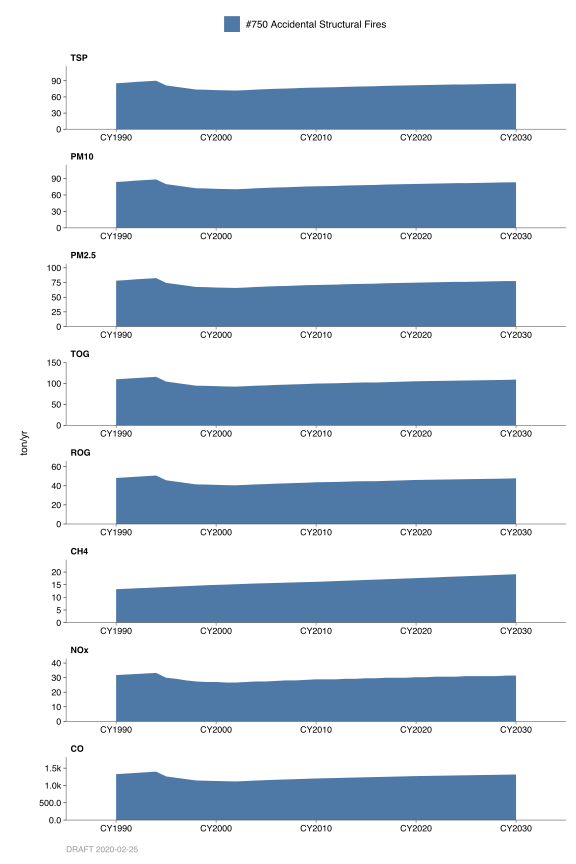
Historical trends are based on data from the State Fire Marshal’s Office and household population growth trends in the Bay Area.
Growth
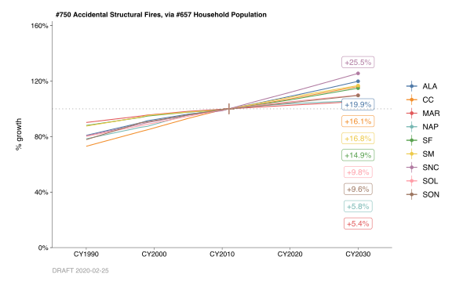
Emissions growth profile is based on household population growth in the Bay Area. Household population data used in developing growth profile was obtained from the Association of Bay Area Government’s (ABAG’s) 2009 “Projections” reports.
By: Sukarn Claire Date: January 2014 Base Year: 2011
10.4 Accidental Vegetation Fires
10.4.1 Emissions
Introduction
Category 1580 is an area source category that accounts for criteria pollutant (particulate, organic, NOx, SOx, and CO) and greenhouse gas emissions (Biogenic-CO2, CH4, and N2O) from wildfires in woodland, timber, brush and grass. Carbon Dioxide emissions from this category are considered to be biogenic emissions. Biogenic Carbon Dioxide (Bio-CO2) emissions are a subset of total CO2 emissions which are emitted from materials that are derived from living cells, excluding fossil fuels, limestone and other materials that have been transformed by geological processes. Bio- CO2 originates from carbon that is present in materials such as wood, paper, vegetable oils and food, animal, and yard waste.
Planned or prescribed fires such as weed burning, field crops, prunings, range improvement burning and forest management are covered in categories 315-319.
Methodology
Methodology for this category is in accordance with the California Air Resources Board’s (CARB’s) document “Methods for Assessing Area Source Emissions in California” for the Wildfires. Activity data (acreage burnt) estimates were obtained from the California Department of Forestry and Fire Protection (CDF) and CARB. Wildfire emissions are calculated using the Geographic Information System (GIS) based Emission Estimating System (EES) model developed for ARB by UC Berkeley’s Center for the Assessment and Monitoring of Forest and Environmental Resources (CAMFER) laboratory. Wildfire footprint is overlaid on vegetation landcover map, calculating the amount of each fuel consumed in the fire. Fuel loading is assigned for each fuel component that makes up the vegetation type.
Emission factors and vegetation acreage consumed vary from fire season to fire season depending on type of vegetation consumed and weather conditions. For example, average composite emission factors and amounts of acreage burnt in the Bay Area by county are shown below for year 2008 2011.
| category | PM | TOG | NOx | SO2 | CO | CO2bio | CH4 | N2O |
|---|---|---|---|---|---|---|---|---|
| #1580 Accidental Vegetation Fires | 229 | 237 | 76 | 23 | 2158 | 385.4 | 86 | 4.43 |
|
|
||||||||
| Emission factors (pounds per unit throughput). |
| County | CY2008 | CY2009 | CY2010 | CY2011 | Unit |
|---|---|---|---|---|---|
| Alameda | 2265 | 761 | 603 | 798 | Acres |
| Contra Costa | 705 | 237 | 188 | 249 | Acres |
| Marin | 566 | 190 | 151 | 200 | Acres |
| Napa | 2148 | 722 | 572 | 757 | Acres |
| San Francisco | 32 | 11 | 9 | 11 | Acres |
| San Mateo | 705 | 237 | 188 | 249 | Acres |
| Santa Clara | 823 | 276 | 219 | 290 | Acres |
| Solano | 2735 | 919 | 729 | 964 | Acres |
| Sonoma | 705 | 237 | 188 | 249 | Acres |
FIXME: Double-check the county-level throughputs listed in the table above!
Other sources for the vegetation combustion emissions related information are the U.S. Department of Energy’s (DOE’s) Energy Information Administration (EIA); the Environmental Protection Agency’s (EPA’s) document AP-42, and the California Energy Commission (CEC).
County Distribution
County distribution of emissions is based on acreage burnt in each of the San Francisco Bay Area counties.
Monthly Variation
On the basis of historical data, the California Department of Forestry and Fire Protection (CDF) suggests most of the wild fires occurring from mid-May to mid-November. The percentage of wild fires by month is estimated as follow: May - 5%, June - 10%, July - 15%, August - 20%, September - 25%, October - 20% and November - 5%.
10.4.2 Trends
History
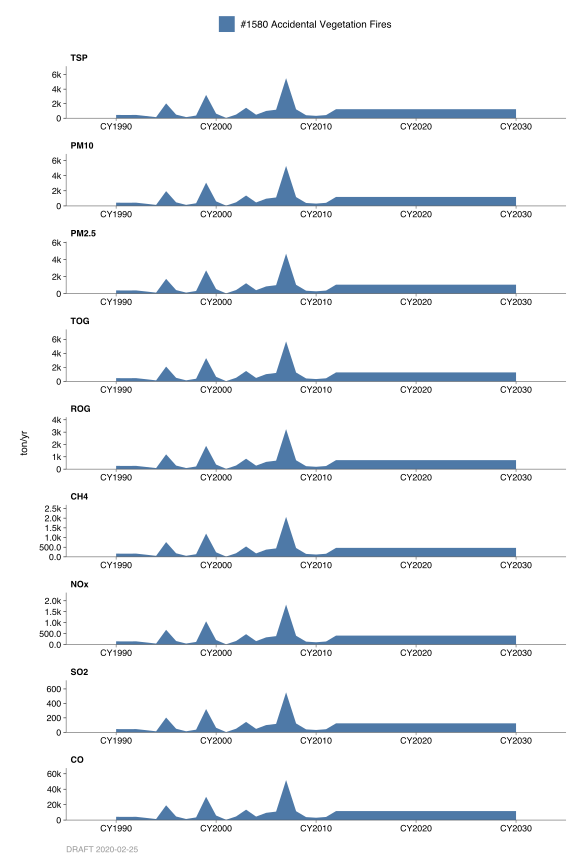
Prior to Base Year 2002 wildfire category 1580 was split into two categories, category 751 (Timber and Brush) and category 752 (Grass and Woodland).
Growth
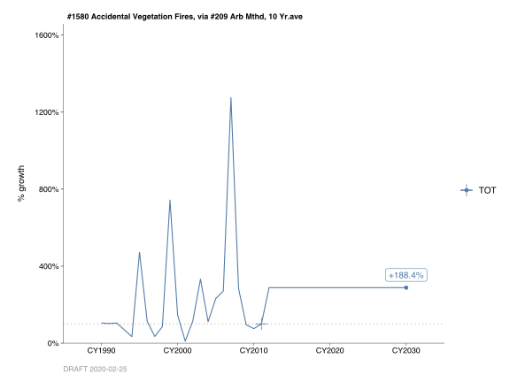
Actual acreage burned can vary widely from year to year depending on weather conditions. Therefore, greater number of wildfires may occurr during a relatively dry year. Future emission trends are based on the average number of acres burned over the previous ten-year period in the San Francisco Bay Area.
By: Sukarn Claire Date: January 2014 Base Year: 2011
10.5 Accidental Automobile Fires
10.5.1 Emissions
Introduction
Category 753 is an area source category that estimates criteria pollutant (particulate, organic, NOx, SOx, and CO) and greenhouse gas emissions (CO2, CH4, and N2O) from accidental automobile fires. The method used to calculate emissions for this category conforms to the method used by the California Air Resources Board (CARB).
Methodology
The total number of automobile accidental fires in California was acquired from the state fire marshal’s office. Automobile fires were apportioned to the Bay Area based on Bay Area population as compared to California’s total population.
The emission factors for automobile fires were derived from the Environmental Protection Agency’s (EPA’s) document AP-42, Section 2.2.2 and 2.4.2. Table 2.2-1 of AP-42 lists the emission factors for uncontrolled auto body incineration, which are based on automobiles that have been partially stripped (tires, seats, etc. removed). Table FIXME: REF lists the emission factors for open burning of automobile upholstery, belts, hoses, and tires in common.
It is assumed that tires are burned in 60% of the automobile fires. Composite emission factors were calculated as a weighted average of the emission factors listed in Table 2.2-1 and 2.4-1 of AP-42, with the assumption that the average car body weighs 3,700 pounds and the components weigh 500 pounds. The criteria pollutant composite emission factors (Lb/Fire) are listed below:
| category | PM | TOG | NOx | CO | CO2 | CH4 | N2O |
|---|---|---|---|---|---|---|---|
| #753 Accidental Automobile Fires | 17 | 5.41 | 0.7 | 21.25 | 626.8 | 2 | 0.135 |
|
|
|||||||
| Emission factors (pounds per unit throughput). |
| PM | TOG | NOx | SOx | CO | |
|---|---|---|---|---|---|
| lb/fire | 17 | 7.21 | 0.7 | 0 | 21.25 |
FIXME: The TOG factor in the table above doesn’t match the BY2011 value. (See auto-generated table, above.)
The emission factors for greenhouse gas inventory were developed using above information and emission coefficient data from the Environmental Protection Agency (EPA), the U.S. Department of Energy’s (DOE’s) Energy Information Administration (EIA) and The California Energy Commission (CEC). The Greenhouse gas composite emission factors (Lb/Fire) are as follow:
| CO2 | CH4 | N2O | |
|---|---|---|---|
| lb/fire | 626.8 | 2.0 | 0.135 |
Temporal Variation
The monthly activity and the weekly activity are uniform. The daily activity occurs primarily during daylight hours.
County Distribution
Automobile fires were apportioned to the Bay Area counties based on population by county. This was used directly in the county distribution except for Solano and Sonoma which were adjusted to include only areas inside the District using household population.
10.5.2 Trends
History
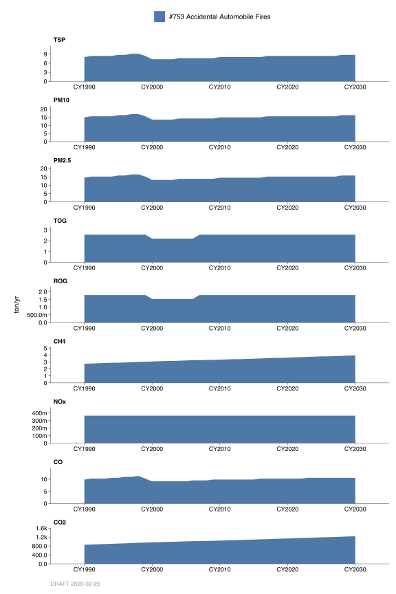
Historical trends were developed using data from the State Fire Marshal’s Office and growth in Bay Area population.
Growth

Emission projections for this category are based on population growth in the San Francisco Bay Area. Population data used for emission growth profile was obtained from the Association of Bay Area Government’s (ABAG’s) 2009 “Projections” reports.
By: Sukarn Claire Date: January 2014 Base Year: 2011
10.6 Paved Roads
10.6.1 Emissions
10.6.1.1 Introduction
Fugitive dust particles raised from the movements of motor vehicles on paved road surfaces are included in this category.
Methodology
The methodology for estimating particulate emissions from vehicular travel on paved roads was updated in the Final Section of Fifth Edition of U.S. EPA’s Compilation of Air Pollutant Emission Factors AP42 document, Volume I, Chapter 13.2.1.
The methodology was adapted and refined for California by CARB. For a full description of this methodology and references, please see CARB’s methodology document “2013 Update_7 9 PavedRds Meth.pdf”.
A brief description is given below:
Emission rates are a function of vehicle weight and silt loading as shown in the following equation:
\[ E = k \left(\frac{sL}{2}\right)^{0.91} \times \left(\frac{W}{3}\right)^{1.02} \times \left(1 - \frac{P}{4N}\right) \] where:
\(E\) is the particulate emission factor in grams per vehicle miles traveled (VMT);
\(k\) is the particle size multiplier used to compute PM10 and PM2.5 (1.0 and 0.25 grams/mile respectively);
\(sL\) is the roadway silt loading in grams per square meter;
\(W\) is the average vehicle weight in tons;
\(P\) is the number of “wet” days with at least 0.254 mm (0.01") of precipitation; and
\(N\) is the number of days in the averaging period, 365 for yearly or 30 for monthly.
California specific silt loading for different road types were measured in a study carried out by Midwest Research Institute (MRI) in 1995. Roads were divided into four classes with the corresponding silt loading factors (\(g/m^2\)):
| Road Type | sL |
|---|---|
| Freeway/Expressway | 0.02 |
| Major Street/Collector | 0.032 |
| Local Street | 0.32 |
| Rural | 1.6 |
Average vehicle weight (\(W\)) was assumed to be 2.4 tons, based on vehicle counts performed during the MRI study. Estimated fraction of county VMT in each of the four roadway types were taken from 2008 data by Highway Performance Monitoring Systems (HPMS). County specific 2011 VMT data were taken from California Air Resources Board EMFAC2011-SG model.
Number of wet days (\(N\)) for each county was derived from the most appropriate meteorological station for that county.
The monthly fraction of annual VMT came from monthly Caltrans VMT highway data prepared for the Sacramento Office of the Federal Highway Administration. These were combined with the number of wet days in the relevant month to develop a monthly profile.
10.6.2 Trends
History
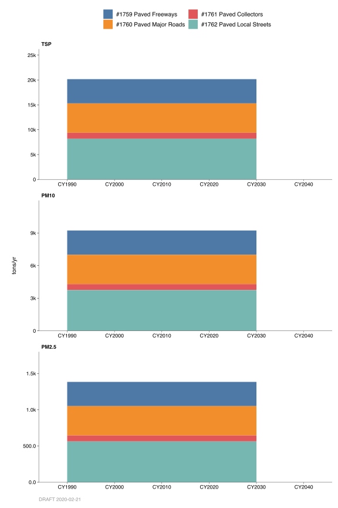
In previous base years, emissions from paved road dust travel were assumed to grow proportionally with VMT. According to this assumption, Bay Area road dust emissions should have increased by 30% between 1990 and 2011 based on growth in VMT. Ambient air monitoring data and chemical mass balance analysis do not show this trend.
Growth
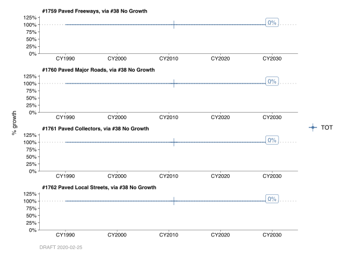
It is believed that re-suspension of road dust quickly reaches an equilibrium condition. Thus, CARB proposed that instead of using VMT as a surrogate for growth, roadways center line miles (CLM) are used. MTC’s CLM data show an increase of less than 2% for the same period (less than 0.1% per year), and this was used to create trends around the 2011 base year emissions.
By: A. K. Fanai December 2013 Base Year 2011
10.7 Unpaved Roads
10.7.1 Emissions
Introduction
Fugitive particulate emissions result from motor vehicles traveling on various types of unpaved road surfaces. The methodology was developed by the California Air Resources Board. For a full description of this methodology and references, please see CARB’s methodology document “2012 Update_7 10 Unpaved Roads Dust Meth (2).pdf”.
Four types of unpaved roads are considered:
- City and County;
- Parks and Forests;
- Bureau of Land Management (BLM) and Bureau of Indian Affairs (BIA); and
- Farm.
Methodologies
The city and county unpaved road mileage were taken from California Statewide Local Streets and Roads Needs Assessment (CSLSRNA), Final Report for the League of California Cities. This report shows that there are no unpaved roads under city and county jurisdiction in the Bay Area.
For parks and forests, Caltrans’ Maintained Public Record Mileage for 2008 were used.
The most recent available Caltrans Maintained Public Record Mileage containing BLM/BIA unpaved road mileage for 1998 was used. The report shows BLM/BIA unpaved roads in Sonoma county only.
The total VMT for each type of road was estimated by assuming 10 miles of travel per day for each mile of unpaved road.
For farm roads, county specific number of acres for various types of crops were taken from California County Agricultural Commissioners reports of 2008 harvested crop acreage. Crop specific VMT were applied to the harvested crop acreage for each county in the Bay Area to estimate county VMT.
Emission factor for all types of road used is assumed to be 2.0 pounds of PM10 per vehicle mile traveled. This is the average of 22 unpaved road dust emission tests performed in San Joaquin Valley for light-duty truck traffic. The measurements were performed as part of studies by University of California, Davis (UCD) “Evaluation of the Emissions of PM10 Particulates from Unpaved Roads in the San Joaquin Valley, Final Report, April 1994” and the Desert Research Institute (DRI) “Effectiveness Demonstration of Fugitive Dust Control Methods for Public Unpaved Roads and Unpaved Shoulders of Paved Roads, Final Report, December 1996”.
Emissions for 2011 were estimated using growth rates described in the following section.
Temporal Variations
It was assumed that wet days (with precipitation over 0.01") prevent these emissions from occurring. The VMT is also assumed to drop significantly during winter months. ARB combined these factor to develop monthly variations for each county.
Activity is assumed to be the same during the week. Daily activity is assumed to take place primarily during the day.
10.7.2 Trends
History
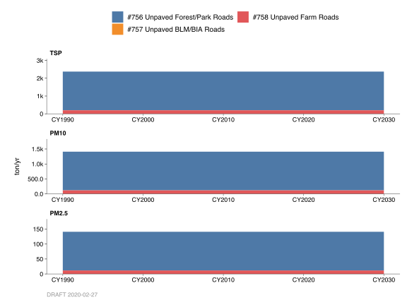
Growth
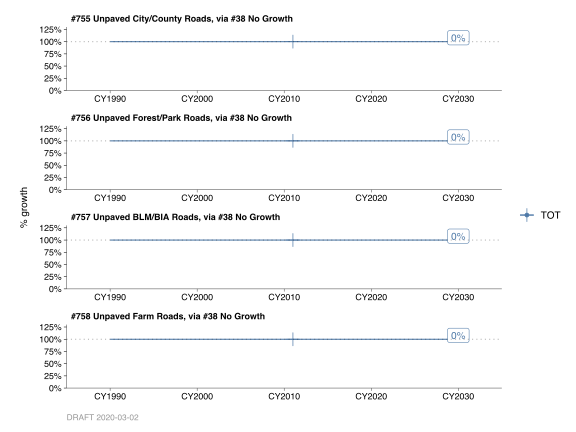
Two growth rates were used for these categories to estimate 1980-2030 emissions:
For farm roads, annual activity was assumed to grow by agricultural production. This growth code was developed by ARB.
For the remaining categories, in the absence of better data, annual variation activity was assumed to follow population by county.
By: A. K. Fanai Base Year 2011 December 2013
10.8 Animal Waste, Livestock
10.8.1 Emissions
Introduction
Livestock emissions including dairy cattle, range cattle, poultry, swine, sheep, horses, and goats are assumed to be directly related to animal population. Most available population data is based on annual sales data. For dairy cattle, range cattle, and feedlot cattle, year 2000 population was derived from the California Department of Food and Agriculture’s (CDFA) summary of cattle and calves inventory of January 1, 2001. The populations are developed by the United States Department of Agriculture, and the CDFA 2001 Agricultural Resources Directory.
Methodology
This methodology is presently based on ARB’s methodology. Livestock population in the Bay Area was divided into subcategories: dairy cattle, range cattle, poultry (layers and broilers), swine, sheep, horses, and goats. Table 1 The table below shows livestock population in the Bay Area.
| county | #1619 Dairy Cattle | #1620 Range Cattle | #1621 Broilers | #1622 Layers | #1623 Turkeys | #1624 Swine | #1625 Sheep | #1626 Horses | #1627 Other Livestock |
|---|---|---|---|---|---|---|---|---|---|
| Alameda | 3,623 | 22,381 | 332,045 | 442 | 0 | 80 | 1,266 | 1,943 | 228 |
| Contra Costa | 11,125 | 16,873 | 0 | 442 | 0 | 65 | 296 | 2,523 | 374 |
| Marin | 20,895 | 18,102 | 0 | 0 | 55,840 | 988 | 13,433 | 723 | 146 |
| Napa | 1,400 | 7,605 | 1,654,297 | 884 | 24,074 | 183 | 523 | 804 | 782 |
| San Francisco | 0 | 0 | 0 | 0 | 0 | 0 | 0 | 0 | 0 |
| San Mateo | 0 | 2,998 | 0 | 442 | 142 | 38 | 108 | 1,129 | 0 |
| Santa Clara | 2,392 | 17,604 | 0 | 141,802 | 0 | 158 | 744 | 2,815 | 136 |
| Solano | 3,353 | 7,732 | 0 | 442 | 0 | 63 | 28,753 | 691 | 70 |
| Sonoma | 19,997 | 12,626 | 978,348 | 297,298 | 62,392 | 327 | 8,762 | 1,633 | 547 |
| Total | 62,784 | 105,921 | 2,964,690 | 441,750 | 142,448 | 1,902 | 53,884 | 12,262 | 2,283 |
For each category, the emissions are calculated by multiplying emission factor and population of each animal type.
Monthly Variation
Monthly distribution was estimated evenly over the twelve months.
County Distribution
The county distribution was based on the cattle population in Table 1 the table above for the nine counties.
History
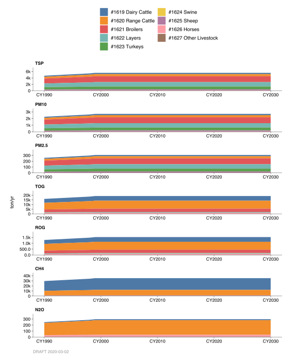
Emissions through the years were estimated based on the ARB’s growth profile on dollar values of Agricultural stock for each county.
Growth
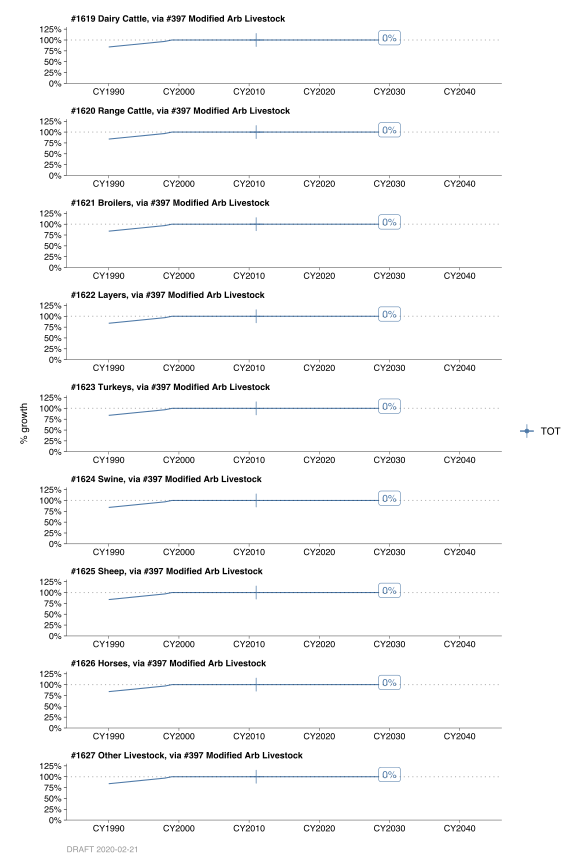
The growth rate varies by county and by livestock and there is currently not a general surrogate to indicate the livestock growth or decline. In most cases, zero growth is assumed for livestock emissions, which is probably reasonable for most areas in the state. Projections to year 2030 are based on the ARB’s growth profile.
By: Michael Nguyen Date: February, 2014 Base Year 2011
10.9 Animal Waste, Other
10.9.1 Emissions
Introduction
Emissions from this category are from waste products of domestic animals (pets) and other native animals including dogs, cats, deer, and wild pigs.
Methodology
The animal population was estimated based on pet to human ratios taken from the report, “Evaluation of Emissions from Selected Uninventoried Sources in the State of California” by Dickson, R. and Tate, S. Population of dogs and cats was estimated based on this ratio with the population of each county. Of the wildlife animals, only deer and wild pigs were considered significant. Numbers of heads for these animals were made based on county land area ratios estimates by the Department of Fish and Game. The emissions are calculated by multiplying emission factor and population of each animal type.
Monthly Variation
Monthly distribution was estimated evenly over the twelve months.
County Distribution
The county distribution was based on dog population for the nine counties, and correspondingly, showed: Alameda-18.5%, Contra Costa-16.4%, Marin-4.6%, Napa- 2.9%, San Francisco-10.6%, San Mateo-12.9%, Santa Clara-21.9%, Solano-5.3%, and Sonoma-6.9%.
10.9.2 Trends
History
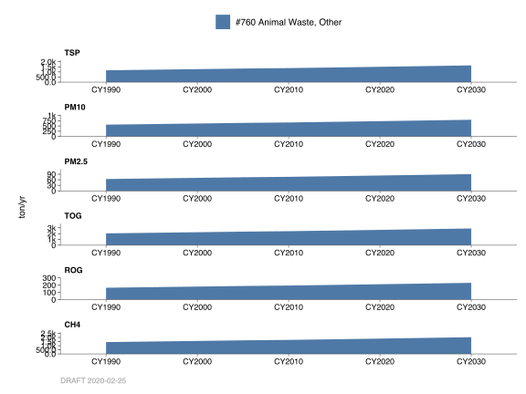
Emissions through the years were estimated based on ARB’s relative values of dollar output for growth in Agriculture-stock of each county.
Growth
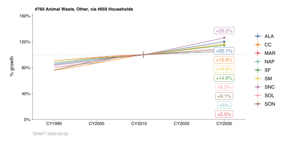
Projections to 2030 were based on the same growth profile of ABAG’s 2009 Projections.
By: Michael Nguyen Date: January, 2014 Base Year 2011
10.10 Sanitary Sewers
10.10.1 Emissions
Introduction
This category includes organic compounds emissions from sanitary sewer lines in industrialized areas leading to sewage treatment plants. This category also includes waste material generated from portable or semi-permanent toilets and discharged to the sanitary sewer system.
Methodology
A report on “Evaluation of Emissions from Selected Uninventoried Sources in the State of California”, by R. Dickson; W.R. Oliver, and S. Tate showed an estimate of discharged material to the sewer systems in the United States. This estimate of national loading to sewers was adjusted for the Bay Area. In the report, about 50% of volatile organic compounds (VOC) was assumed from the discharged material volatilizes in the sewer prior to becoming influent to treatment plants. It was further assumed that 50% of the volatilized materials have already been accounted for in other categories, such as cleanup solvent.
An emission factor of 250 lbs of organics per thousand pounds of industrial sewer loading was also developed based on the above report. The VOC Emissions are calculated by multiplying the throughput data with the emission factor.
Monthly Variation
Monthly distribution was estimated based on estimated load throughout the year.
County Distribution
The county population was used to distribute emissions into each county.
10.10.2 Trends
History
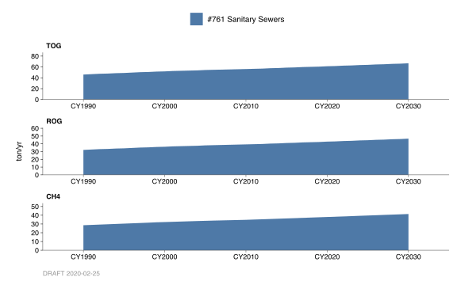
Emissions through the years were estimated by using historical data on household population.
Growth
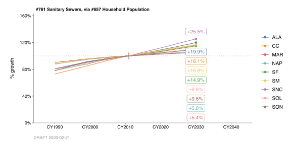
ABAG’s 2009 Projections Household Population profile was utilized to project future emissions to year 2030.
By: Michael Nguyen Date: January, 2014 Base Year 2011
10.11 Wind Blown Dust
10.11.1 Emissions
Introduction
Included in these categories are fugitive dust emissions resulting from wind erosion across agricultural fields (Category #764), and from wind erosion of soil on unpaved roads (Category #765).
Methodologies
Total acreage for field crops, vegetable crops, fruit and nut crops, nursery crops, plants, flowers and miscellaneous crops were obtained for each county as reported in the “Agricultural Crops”. The estimated crop acres were used as throughput for the calculation of wind erosion from agricultural fields (Category #764).
The number of miles of unpaved road for each county were estimated from the “California Abstracts”, and converted into acreage. It was assumed a typical width of a road was 25 feet. The acreage of unpaved road was used as throughput for the calculation of windblown dust from unpaved roads (Category# 765). Particulate emission factor from dust emissions were developed based on the U.S. Department of Agriculture’s equation:
\[ \text{Emission Factor} = E \times I \times C \times K \times L \times V \] where
\(E\) = portion of total wind erosion loses as suspended particulates
\(I\) = soil erodibility, t/acre/yr
\(C\) = climatic factor
\(K\) = surface roughness factor
\(L\) = unsheltered field width factor
\(V\) = vegetative cover factor
(\(K\), \(L\), \(V\) depends on the crop type)
| Agricultural Land | Unpaved Roads | |
|---|---|---|
| E | 0.025 | .038 |
| I | 38 - 220 | 86, 47, 56 |
| C | 0.15 | 0.15 |
| K | 0.8, 0.6, 0.1, 0.6 | 1.0 |
| L | 0.74, 0.83, 0.77, 0.56 | .29 - .34 |
| V | 0.05, 0.91, 0.26, 0.26 | 1.0 |
Particulate emissions from agricultural windblown dust were calculated by multiplying the crop acres by the emission factors developed by the U.S. Department of Agriculture, as above.
Particulates emissions from windblown dust from unpaved roads were calculated by multiplying the unpaved acreage by the emission factors as developed above.
Monthly Variation
Emission distribution through the months was estimated to be equal throughout the year.
County Distribution
The report on Agricultural Crops for each county showed total acreage for each and are used in distributing emissions throughout the counties.
10.11.2 Trends
History
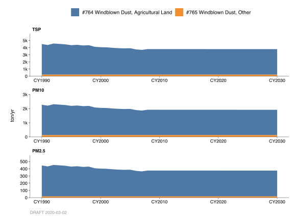
Emissions throughout the years were estimated based on the report of acreage of each county.
Growth
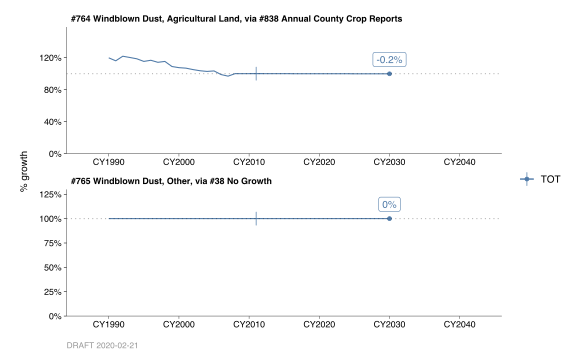
Projections to year 2030 were estimated to be the same, with the assumption there would be no major changes in the acreage on agricultural lands and unpaved roads.
By: Michael Nguyen Date: February, 2014 Base Year 2011
10.12 Cigarette and Tobacco Smoke
10.12.1 Emissions
Introduction
Emissions from tobacco smoking, particularly from cigarettes, cigars, and pipes, are presented in this category. Mainstream smoke (MS), which is generated during puffs, is generally inhaled by the smoker and a small fraction is exhaled. Sidestream smoke (SS), or the smoke issued from the product between puffs, is viewed as the most important emissions. Burning cigarettes may include total particulate matter, nicotine, phenol, CO2, CO, NOx, NH3, hydrogen cyanide, and formaldehyde.
Methodology
Cigarette consumption was based on a report from Atmospheric Environment Journal, Vol. 21, No. 2, “Measuring Environmental Emissions from Tobacco Combustion: Sidestream Cigarette Smoke Literature Review”, by M.R. Guerin, Higgens, & Senkins. The reported stated that about 48% of the smokers smoked less than a pack of cigarettes, 32% smoked one pack, 15% smoked two packs, and 5% smoked 2.5 packs or more per day.
A recent finding showed that although there has been a decrease of adult smokers, there was also an increase in younger smokers, and therefore, it is still estimated 10% of the population (or 743,744 cigarette smokers) are still smoking regularly in the Bay Area.
The cigarette consumption is estimated as followed: \(743,744 \times (48\% \times 0.5 + 32\% \times 1 + 15\% \times 2 + 5\% \times 2.5) \times 20 = 14,651,759\) cigarettes/day (or 5,477.47 tons cigarettes per year)
Emission factors were derived based on the Table 1 of the report.
| category | PM | TOG | NOx | SO2 | CO |
|---|---|---|---|---|---|
| #766 Cigarette and Tobacco Smoke | 81.86 | 6.021 | 3.849 | 0 | 71.18201 |
|
|
|||||
| Emission factors (pounds per unit throughput). |
Monthly Variation
Monthly distribution was estimated to be the same throughout the year.
County Distribution
County population was used to distribute emissions for each county.
10.12.2 Trends
History
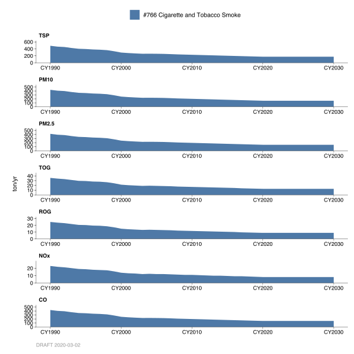
The historical growth profile was based on the Association of Bay Area Government’s Population data.
Growth
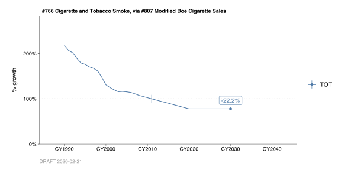
The current trends show cigarette/tobacco consumption for regular smokers decreasing slightly over the next several years.
By: Michael Nguyen Date: February, 2014 Base Year 2011
10.13 Non-Consumer Pesticides
10.13.1 Emissions
Introduction
Categories 1190 – 1193 account for emissions from all pesticide usage for agricultural, commercial, and institutional purposes. Agricultural use includes pesticide applications to crops, rangelands, pastures, cemeteries, parks, golf courses, and along roadsides and railroad right-of-ways. Additionally, all post-harvest pesticide treatment of agricultural goods, along with pesticide use in poultry, fish production, and some livestock applications all fall under the agricultural definition. Non-agricultural use includes structural operators, professional gardeners, and (non-agricultural) pest control operators. These categories do not include pesticides sold from retail stores in small quantities for home consumers. Consumer pesticides are covered in consumer product categories 1494-1509.
Prior to 1996, the agricultural and non-agricultural pesticide divisions each consisted of application and residual categories for both synthetic and non-synthetic pesticides. The District had eleven categories associated with non-consumer product pesticides. Creosote application was considered a separate category. In 1996, the two divisions (agriculture and non-agriculture) were broken down into methyl bromide and other categories. The creosote application category is now incorporated in both the agricultural and non-agricultural pesticide’s “Other” categories.
Methodologies
The following table lists the Pesticides Categories and their 2011 total organic emissions (TOG) in tons/day.
| Category | CY2008 | CY2009 | CY2010 | CY2011 | Pollutant | Unit |
|---|---|---|---|---|---|---|
| #1190 Agricultural, Methyl Bromide | 0.061 | 0.031 | 0.056 | 0.055 | TOG | ton/day |
| #1191 Agricultural, Other | 0.855 | 0.593 | 0.847 | 0.828 | TOG | ton/day |
| #1192 Non-Ag/Consumer, Methyl Bromide | 0.003 | 0.003 | 0.003 | 0.003 | TOG | ton/day |
| #1193 Non-Ag/Consumer, Other | 0.182 | 0.161 | 0.163 | 0.165 | TOG | ton/day |
The California Department of Pesticide Regulation (DPR) provided the pesticide use data to the California Air Resources Board (ARB). The TOG emissions data for the years 2005 to 2009 are actual data estimated from the DPR Pesticide Reports.
For Categories 1190 and 1191, the 2010 and 2011 the TOG emissions were grown from the year 2007. The year 2007 is the mid-point of the 5 year average. (Both ARB and DPR agreed the use of a 5-year average of historical data as an adjusted value would account for weather and pest infestation variability in agricultural pesticide emissions.)
For Categories 1192 and 1193, the 2010 and 2011 TOG emissions were grown from the year 2009.
Monthly Variation
Monthly activity variation data is based on pesticide usage data in the Bay Area.
County Distribution
The county distribution is also based on pesticide usage for each county in the District.
10.13.2 Trends
Historical
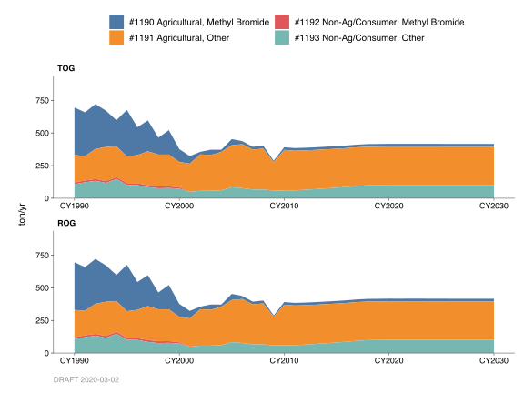
The historical growth profile for the agricultural pesticides categories (Cats. 1190 and 1191) was based on a combination of prior adjusted emissions data (1990 - 2011) and a growth profile (from DRI94/DPR) provided by ARB.
Structural pesticide, Methyl Bromide (Cat. 1192) was phased out in 2001.
Growth
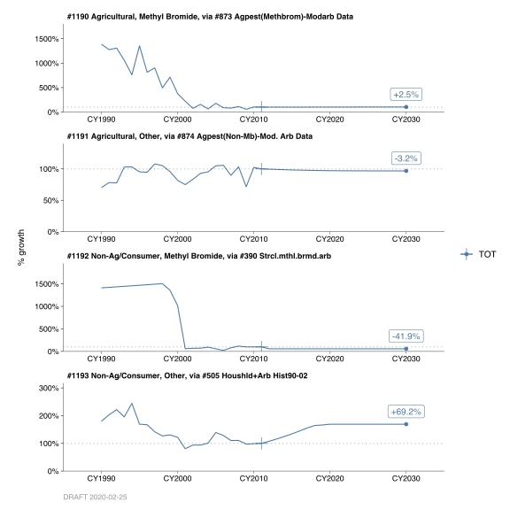
The annual growth profile for categories 1190 and 1191 is based on 2012 – 2030 data provided by CARB. Emission projections for category 1193 are based on household population growth in the Bay Area.
Control
The District does not currently have any regulations governing these categories; however the State of California Department of Pesticide Regulation has adopted regulations controlling various agricultural and structural pesticides. Additionally, the Federal EPA has phased out methyl bromide because of its ozone depleting potential.
By: Stuart Schultz/Sukarn Claire Date: January 2014 Base Year: 2011
10.14 Consumer Products
10.14.1 Emissions
Introduction
This category group contains emissions from consumer products such as hair spray, shaving cream, deodorant, charcoal lighter fluid, etc.
Methodologies
Emissions are estimated from sales of consumer products on regional basis. The figures were developed by the California Air Resources Board based on consumer product surveys and re-tabulated for each region. Table below shows total organic gas (TOG) emissions from consumer products in the San Francisco Bay Area.
| Category | CY2008 | CY2009 | CY2010 | CY2011 | Pollutant | Unit |
|---|---|---|---|---|---|---|
| #1440-1454 Coatings (Aerosol only) | 4.976 | 5.018 | 5.061 | 5.089 | TOG | ton/day |
| #1455-1464, 1493 Adhesives | 1.306 | 1.316 | 1.326 | 1.332 | TOG | ton/day |
| #1465-1475, 1477-1492 Automotive Products | 12.811 | 12.904 | 13.002 | 13.072 | TOG | ton/day |
| #1494-1509 Pesticides / Herbicides / Sterilants | 4.809 | 4.841 | 4.879 | 4.905 | TOG | ton/day |
| #1510-1574 Household / Personal | 27.685 | 27.865 | 28.001 | 28.151 | TOG | ton/day |
FIXME: Tabulation above doesn’t match BY2011 Methodology PDF
County Distribution
County distribution is based on population of each county. Solano and Sonoma Counties are partially in the District, so population data were used for the cities that are within the District boundaries.
Monthly Variation
For most consumer product categories monthly variation is assumed to be constant. Charcoal lighter material usage is assumed to be higher during summer months.
10.14.2 Trends
History
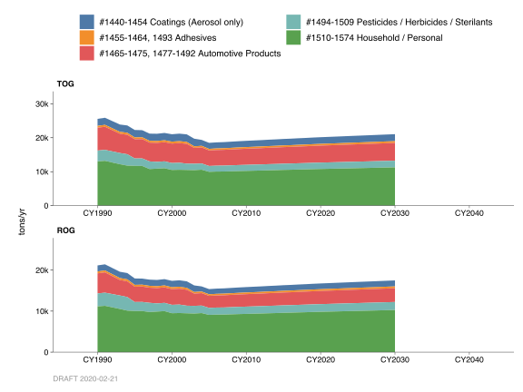
Consumer product emission trends have followed population growth.
Growth
The consumer product emissions are projected to grow relative to population growth in the Bay Area. Future projections are made using population data in accordance with the Association of Bay Area Government’s (ABAG’s) 2009 report.
Control
All controls are in accordance with the California Air Resources Board (CARB).
By: Sukarn Claire Date: January 2014 Base Year: 2011
10.15 Biogenic
10.15.1 Emissions
Introduction
Living vegetation throughout the Bay Area produce the biogenic organic emissions covered by these four emission categories. (Such vegetation is considered to be part of the general group known as “area” sources). Chemical analysis of biogenic emissions by investigators has led to their being classified into four separate chemical groupings. This detail has been maintained in the four categories developed for this Base Year emission inventory, and covered by this methodology.
Methodologies
Emissions were obtained from a presentation at CARB’s EITEAC Meeting on May 19, 2004. Biogenic emissions were estimated using the ARB’s BEIGIS model. Model inputs include the California GAP Analysis Project, California Department of Water Resources crop reports, SCAG and SANDAG (councils of government) urban land use, and satellite-derived leaf area index (LAI) data. The BEIGIS model is driven by temperature and solar radiation, BVOC emission factors and specific leaf weight factors.
Estimated average annual organic emissions, in tons per day, are:
| Category | TOG | Unit |
|---|---|---|
| #784 Isoprene | 57.01 | ton/day |
| #785 Alpha Pinene | 18.47 | ton/day |
| #786 Monoterpene | 19.98 | ton/day |
| #787 Other Biogenic Organics | 14.74 | ton/day |
Monthly variation
The monthly profile was estimated using monthly average ambient temperatures for the Bay Area. This information was obtained from the Climatological Summary Report from the National Climatic Document Center in North Carolina.
County Distribution
Data for each county consisted of four estimated emissions for the four organic compound classes represented by the categories covered by this methodology.
10.15.2 Trends
History
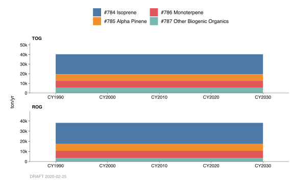
Prior to 2005, biogenic emissions were provided by Keith Baugues, EPA Source Receptor Analysis Branch of the Technical Support Division, Research Triangle Park, North Carolina.
Growth
For the years 2005 - 2030, for each category covered by this methodology, emissions were also maintained at the 2005 values.
By: Michael Nguyen Date: February, 2014 Base Year 2011
10.16 Ozone Depleting Substance (ODS) Substitutes
10.16.1 Emissions
Introduction
Ozone-depleting substances (ODS) are being phased out under the terms of the Montreal Protocol and the 1990 Clean Air Act Amendments. ODS include chlorofluorocarbons (CFC’s), hydrochlorofluorocarbons (HCFC’s), carbon tetrachloride, etc., and have been used in refrigeration and air conditioning equipment, solvent cleaning, foam production, sterilization, aerosol and fire extinguishing applications. The substitutes approved to replace the ODS include hydrofluorocarbons (HFC’s) and perfluorocarbons (PFC’s) emit both total organic gases (TOG) and greenhouse gases (GHG’s), many of which have high global warming potentials (GWP’s). All of the ODS Substitutes are non-reactive, so there are no reactive organic gas (ROG) emissions. The use of these ODS substitutes have steadily increased since 1990.
Methodology
The TOG and GHG emissions were estimated using California Air Resources Board’s (CARB’s) Documentation of California’s Greenhouse Gas Inventory (6th Edition, updated August 1, 2013) data. CARB emission totals represented values for the entire state and were divided into 4 sectors (commercial, industrial, residential and transportation). Within each sector, the ODS Substitutes were further divided by usage (i.e. Aerosols, Fire Protection, Foams, Refrigeration and Air Conditioning, and Solvents, if applicable). The District’s portion of the State’s total was estimated by comparing 2011 data in Table B-3 (Total Population of California Counties), Table C-4 (“Wage and Salary Workers in Nonagricultural Establishments By Industry, California”) and Table C- 7 (“Wage and Salary Workers in Nonagricultural Establishments By Industry, California Metropolitan Areas”) of the California Department of Finances Statistical Abstract. For the residential sector, the population in the Bay Area District counties was compared to the State population. The number of Bay Area workers in the industrial, commercial, and transportation sectors were compared to the number of state workers in these sectors. In 2011, the fraction of Bay Area population and workers to that of State population and workers in the residential, industrial, commercial, and transportation sectors were 0.19, 0.14, 0.23, and 0.18, respectively. Each ODS Substitute, depending upon sector, was multiplied by this fraction and the State value.
Monthly Variation
Monthly variation of emissions for these categories is assumed to be uniform throughout the year.
County Distribution
The county distributions for these categories were based on Association of Bay Area Government’s (ABAG) 2009 Projections Data for 2011. For those emissions in the commercial, industrial, residential, and transportation sectors, ABAG’s data from retail employment, manufacturing and wholesale employment, population, and transportation and utility employment, respectively, were used. Each category may have a combination of aforementioned sectors, so a composite county fraction was calculated based on the sector’s emission (within the category).
10.16.2 Trends
History
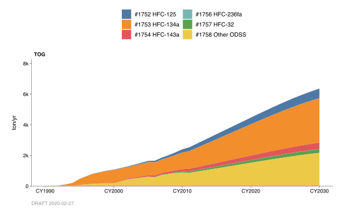
Emission data from 1990 – 1999 was based on trend data from CARB’s 1990 – 2004 GHG Inventory by IPCC Category. Emission data from 2000 - 2010 was based on emission data from CARB’s 2000 – 2011 GHG Inventory by IPCC Category.
Growth
FIXME: Double-check whether these are consistent with the year-over-year changes in emissions (shown in figure above). BY2011 throughputs for these categories were not recorded in DataBank.
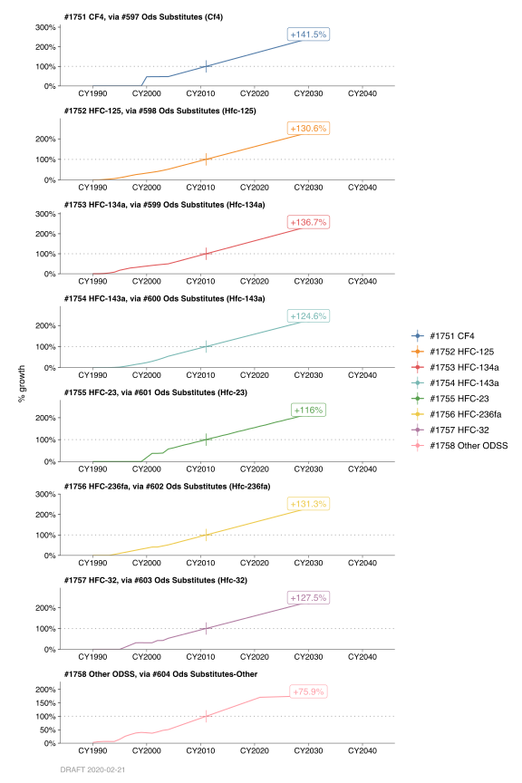
Emission data from 2012 – 2030 was based on trend data from CARB’s California GHG Emissions – Forecast (2008 – 2020), (last updated October 28, 2010).
By: Stuart Schultz Date: February 2014 Base Year 2011